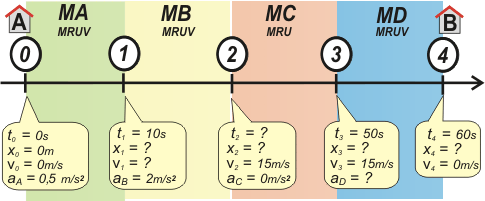

|
NO ME SALEN
SOLVED PROBLEMS IN PHYSICS
(Uniformly Accelerated Motion) |
|

|
| Additional No me salen 3.16 - A train leaves station A, accelerates constantly at 0,5 m/s² for 10 seconds and then it goes on accelerating at 2 m/s² up to a final cruising speed of 54 km/h. It travels at this same speed until approaching station B. At that moment it starts decelerating uniformly in advance and stops in 10 seconds. What is the distance between station A and station B? |
|
If you carefully read the wording of the problem, you’ll see it’s about four different motions, all linked together, in a chain of events. Both the first and second motions are non-uniform as well as the fourth and last one. The third motion is uniform. Look at the awesomely useful sketch below: the mostly important thing is that it contains THE WHOLE data already stated in the wording of the problem. |
|
|
|  |
|
spanish:
non-uniform
MRUV (movimiento rectilíneo uniformemente variado)
uniform
MRU
(movimiento rectilíneo uniforme) |
| We can see there are four motions. Let’s call them MA, MB, MC and MD. To help you fully grasp how to work out kinematics equations, I decided to follow a constant pattern of colors on every graph and sketch, so as to easily show how each equation matches its respective motion. Seven equations will be enough to explain the above described motion: two of them will be necessary for each MRUV, while just one of them will be as much as the MRU wants. To deal with their statement writing process, we must replace each constant part of the mathematical model for kinematics equations (to, xo, vo and a) with the very first constants already stated for each motion. Please be careful and patient enough when doing this task, so as to avoid making mistakes. |
|
|
| MA |
x = 0,25 m/s² . t²
v = 0,5 m/s² . t |
| MB |
x = x1 + v1 . ( t – 10 s) + 1 m/s² ( t – 10 s )²
v = v1+ 2 m/s² ( t – 10 s ) |
| MC |
x = x2 + 15 m/s . ( t – t2) |
| MD |
x = x3 + 15 m/s . ( t – 50 s) + ½ aD ( t – 50 s )²
v = 15 m/s + aD ( t – 50 s ) |
|
|
These equations describe THE COMPLETE motion of the train |
Please note that each equation is taking either the pair x and t or the pair v and t, it is to say, they are all containing the variables (stressed in red) which show the infinite different positions run by the train with regard to certain periods of time, as well as all of those changes happening to speed development. This deals with the basic concepts of kinematics, which, once fully learned, will help you gain improvement in other areas of knowledge.
It can't be denied that, though being so accurate, they are not supposed to immediately give you all the answers to all the questions you might have on your mind, as there are a lot of constants we still do not know about... but all of these equations together, working as a team, will be able to successfully satisfy everything you are willing to know.
We can try each of them out by asking them, for example, to tell us about every final stretch:
|
|
|
 |
x1 = 0,25 m/s². (10 s)²
v1 = 0,5 m/s² . 10 s
x2 = x1 + v1 . (t2 – 10 s) + 1 m/s² (t2 – 10 s)²
15 m/s = v1 + 2 m/s² . (t2 – 10 s)
x3 = x2 + 15 m/s . (50 s – t2)
x4 = x3 + 15 m/s . (60 s – 50 s) + ½ aD (60 s – 50 s)²
0 m/s = 15 m/s + aD (60 s – 50 s) |
[1]
[2]
[3]
[4]
[5]
[6]
[7] |
|
|
 |
Awww... I should have seen it coming! In the end we have got a seven equations system (See the single mark on the left? Well... yes, you already know it is a brace but, in this very case, I used it to show that the statements on the right are connected or working together. Got it?) dealing with seven unknowns (x1, v1, x2, t2, x3, x4 and aD). Thrilling, hey? Oh, damn you... come along! Can't you see physics is up to this point? Which is the most important thing for you to realize is that, from now on, we will have to deal just with algebra. Yes, algebra, but... back off, man! It is awfully easy and, which is best, not only am I going to help you solve everything but also I'm plotting all the remaining graphs still needed to be drawn up.
|
|
|
Starting off at [1] and [2]
x1 = 25 m
v1 = 5 m/s
then we go to [4]
t2 = 15 s
and now on to [3]
x2 = 75 m
Once we collect this data let’s go to [5]
x3 = 600 m
and finally on to [7]
aD= — 1,5 m/s²
|
|

|
|
|
|
Having got this last value together with x3... our journey's over [6] |
|
|
|
|
|
SOME HELPFUL COMMENTS: You should have realized that just one single Reference System has been run to help solving the problem. However, you'll see that commonly the rest of human beings (not me!) would rather find the right answers to this problem (and, by extension, to all of this kind) by considering each motion separately from the other ones. It is to say, by regarding each motion as if starting at zero both in time and position. Please don't laugh at them when looking at them being so naive... they are just beginners! Hope they will grow out of it sooner or later. |
|
|
|
| |
|
|
| CHALLENGE: Just redo this exercise again but this time according to a Reference System where the zero point for both time and positions will be point 2 on my sketch. |
|
 |
| |
|
| Some Rights Reserved. Not allowed to be copied without naming either the author or this source material. Those ones not obeying these rules will be sentenced to hard labor in the Antarctica. Translated by Fernando Diego García Haoys. Last updated May-09. Buenos Aires, Argentina. |
|
|
| |
|